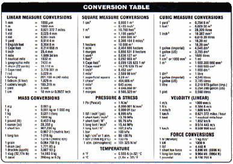
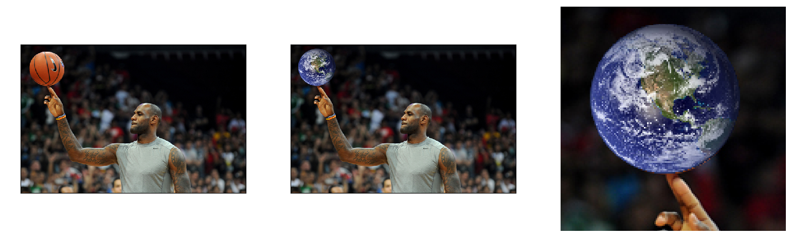
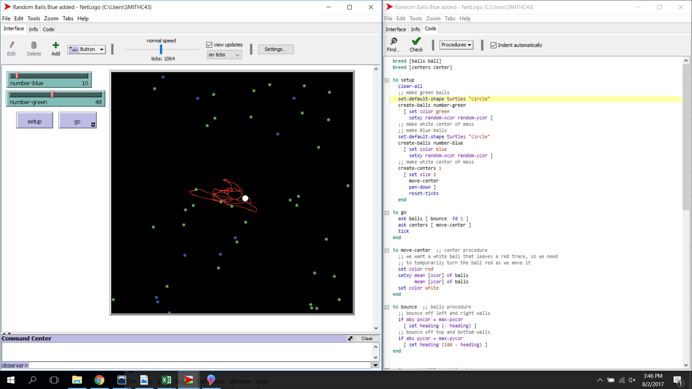

Link to Scratch below.
Day 2
Link to our Scratch project.
This is game in where you help the lost puppy find their way home. At this time it is not yet finished. The base codeing is in now we will update when we have time to do it. You can see the code we made.
Day 3
Link to our App Inventor project.
This is a game in where you can click on the duck to score. It will keep your score, be sure to put your name in and submit your score. Version 2 add sound and set of istructions.
Day 4
Link to our first Python project, telling a story.This is a game in where you can make choices to get Selena to Cancun to swim with dolphines at xcaret mexico.
Day 5
Link to our second Python project.
This is a python beginner program to convert units of measure. Very basic code but can be edited to convert what ever you want. Version 2 add menu.
Day 6
Link to our third Python project.

This is a python beginner program to change a picture. We have the original picture added the world picture to the original and zoomed in for the third picture. You may need to download the original pictures to run the program. We also turned off the grids and ticks on the outside of the pictures. Make sure all three, program and pictures are in the same folder.
Day 7
Link to our fourth Python project.
This is a python beginner program to create a graph of two different data files. Click on picture to download program.


Click on the different pictures to download txt and data files.
This is a python beginner program to create a graph of two different data files. The links for the data files are above and the link to the website where the data originated is also included.
Day 8
Link to our Netlogo project code.
This is a Netlogo project. We remixed the code to add our touch to the program.